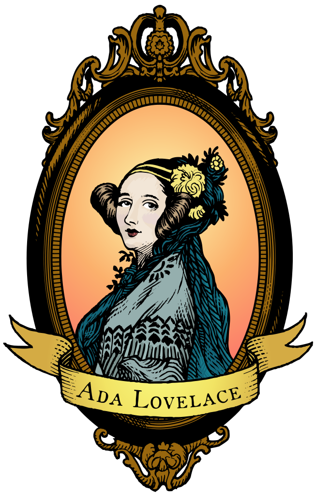

Ada Lovelace

An illustration inspired by the A. E. Chalon portrait created for the Ada Initiative, which supported open technology and women
Augusta Ada King, Countess of Lovelace (née Byron; 10 December 1815 – 27 November 1852) was an English mathematician and writer, chiefly known for her work on Charles Babbage's proposed mechanical general-purpose computer, the Analytical Engine. She was the first to recognise that the machine had applications beyond pure calculation, and published the first algorithm intended to be carried out by such a machine. As a result, she is sometimes regarded as the first to recognise the full potential of a "computing machine" and the first computer programmer.[1][2][3]
Lovelace was the only legitimate child of the poet Lord Byron and his wife Anne Isabella "Annabella" Milbanke, Lady Wentworth.[4] All of Byron's other children were born out of wedlock to other women.[5] Byron separated from his wife a month after Ada was born and left England forever four months later. He commemorated the parting in a poem that begins, "Is thy face like thy mother's my fair child! ADA! sole daughter of my house and heart?".[6] He died of disease in the Greek War of Independence when Ada was eight years old. Her mother remained bitter and promoted Ada's interest in mathematics and logic in an effort to prevent her from developing her father's perceived insanity. Despite this, Ada remained interested in Byron and was, upon her eventual death, buried next to him at her request. She was often ill in her childhood. Ada married William King in 1835. King was made Earl of Lovelace in 1838, and Ada in turn became Countess of Lovelace.
Her educational and social exploits brought her into contact with scientists such as Andrew Crosse, Sir David Brewster, Charles Wheatstone, Michael Faraday and the author Charles Dickens, which she used to further her education. Ada described her approach as "poetical science"[7] and herself as an "Analyst (& Metaphysician)".[8]
When she was a teenager, her mathematical talents led her to a long working relationship and friendship with fellow British mathematician Charles Babbage, also known as "the father of computers", and in particular, Babbage's work on the Analytical Engine. Lovelace first met him in June 1833, through their mutual friend, and her private tutor, Mary Somerville.
Between 1842 and 1843, Ada translated an article by Italian military engineer Luigi Menabrea on the engine, which she supplemented with an elaborate set of notes, simply called Notes. These notes contain what many consider to be the first computer program—that is, an algorithm designed to be carried out by a machine. Lovelace's notes are important in the early history of computers. She also developed a vision of the capability of computers to go beyond mere calculating or number-crunching, while many others, including Babbage himself, focused only on those capabilities.[9] Her mindset of "poetical science" led her to ask questions about the Analytical Engine (as shown in her notes) examining how individuals and society relate to technology as a collaborative tool.[5]
She died of uterine cancer in 1852 at the age of 36.
Celebrating women in STEM
Ada Lovelace Day (ALD) is an international celebration of the achievements of women in science, technology, engineering and maths (STEM). It aims to increase the profile of women in STEM and, in doing so, create new role models who will encourage more girls into STEM careers and support women already working in STEM.
Founded in 2009 by Suw Charman-Anderson, it is now held every year on the second Tuesday of October. It features a flagship Ada Lovelace Day Live! ‘science cabaret’ event in London, UK, at which women in STEM give short talks about their work or about other women who have inspired them, or perform short comedy or musical interludes with a STEM focus.
This year, ALD Live! will be held on 9 October, at The IET in London, and tickets are on sale now from Eventbrite! We have a fabulous line-up of speakers, including epidemiologist Prof Sunetra Gupta, computer scientist Chanuki Seresinhe, palaeontologist Dr Susie Maidment, engineer Dr Hilary Costello, mathematician Prof Emma McCoy, marine scientist Dr Diva Amon, and science demo builder Natasha Simons. Our compère will once again be geek songstress and one third of Festival of the Spoken Nerd, Helen Arney! Plus we will have a book signing by Sue Nelson who will be signing copies of her book, Wally Funk's Race for Space.
Tickets usually sell out quickly, so book now to secure your place! And, if you're not sure what ALD Live! is like, you can watch the last few years' talks on YouTube.
Ada Lovelace Day also includes dozens of grassroots events around the world, organised entirely independently from the ALD Live! event. These events take many forms — from conferences to Wikipedia ‘edit-a-thons’ to pub quizzes — and appeal to all ages, from girls to university students to women with well-established careers. Every year, people in dozens of countries across six continents put on their own event to support women in their own communities. You can find out if there's an event near you on our map. And if there isn't, why not organise your own?
Ada's Algorithm: How Lord Byron's Daughter Ada Lovelace Launched the Digital Age by James Essinger
“[Ada Lovelace], like Steve Jobs, stands at the intersection of arts and technology."—Walter Isaacson, author of The Innovators
Over 150 years after her death, a widely-used scientific computer program was named “Ada,” after Ada Lovelace, the only legitimate daughter of the eighteenth century’s version of a rock star, Lord Byron. Why?
Because, after computer pioneers such as Alan Turing began to rediscover her, it slowly became apparent that she had been a key but overlooked figure in the invention of the computer.
In Ada Lovelace, James Essinger makes the case that the computer age could have started two centuries ago if Lovelace’s contemporaries had recognized her research and fully grasped its implications.
It’s a remarkable tale, starting with the outrageous behavior of her father, which made Ada instantly famous upon birth. Ada would go on to overcome numerous obstacles to obtain a level of education typically forbidden to women of her day. She would eventually join forces with Charles Babbage, generally credited with inventing the computer, although as Essinger makes clear, Babbage couldn’t have done it without Lovelace. Indeed, Lovelace wrote what is today considered the world’s first computer program—despite opposition that the principles of science were “beyond the strength of a woman’s physical power of application.”
Based on ten years of research and filled with fascinating characters and observations of the period, not to mention numerous illustrations, Essinger tells Ada’s fascinating story in unprecedented detail to absorbing and inspiring effect.